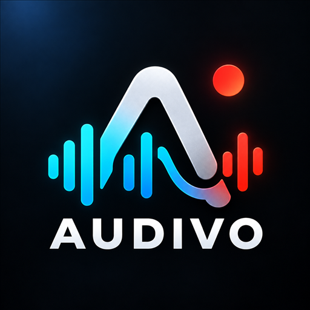

Audivo
Record. Monitor. Listen.
An Android audio recorder with input meters, adjustable audio settings, recording sessions, and local playback.
Your recording workflow
Check your input with Sound Check, select a supported recording format, and manage your sessions in the Library. Audio recording and playback work locally on your device.
Support
Developed by William Sutanto.
For help with Audivo, email audivoapp.support@gmail.com.
When reporting an issue, include your Audivo version, Android version, device model, and the steps that caused the problem. Share recordings only if needed and with permission.